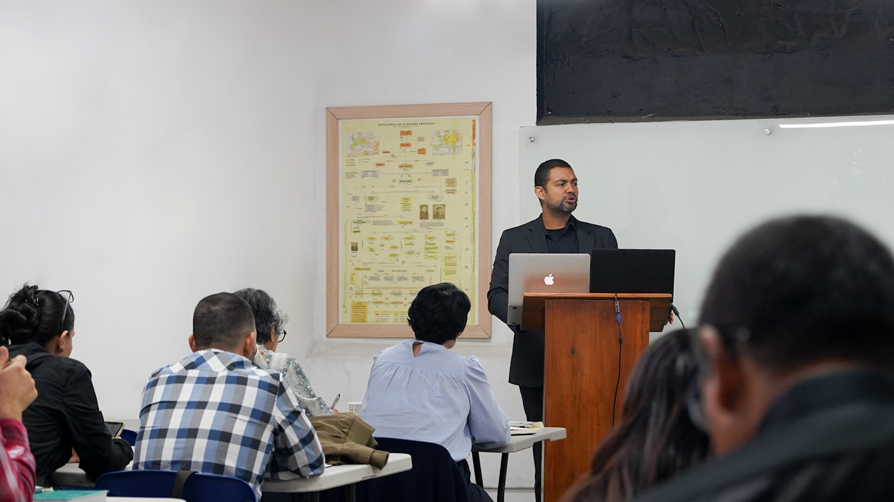

Niños
Un espacio de cuidado y enseñanza bíblica apropiada para su edad. Detalles por confirmar.
Ministerios
Cada ministerio existe para formar discípulos, cuidar familias y anunciar a Cristo con fidelidad.

Un espacio de cuidado y enseñanza bíblica apropiada para su edad. Detalles por confirmar.
Formación en la Palabra, comunión y acompañamiento para crecer en madurez cristiana.
Apoyo pastoral para matrimonios, padres e hijos que desean ordenar su hogar bajo el evangelio.
Espacios de comunión, oración y cuidado mutuo durante la semana. Horarios por confirmar.
Acompañamiento personal para afirmar doctrina, carácter y servicio en la iglesia local.
Participación en la extensión del evangelio en la ciudad y hasta donde Dios abra puertas.
Próximo paso
Si ya haces parte de la iglesia, queremos ayudarte a encontrar un lugar de servicio fiel y saludable.